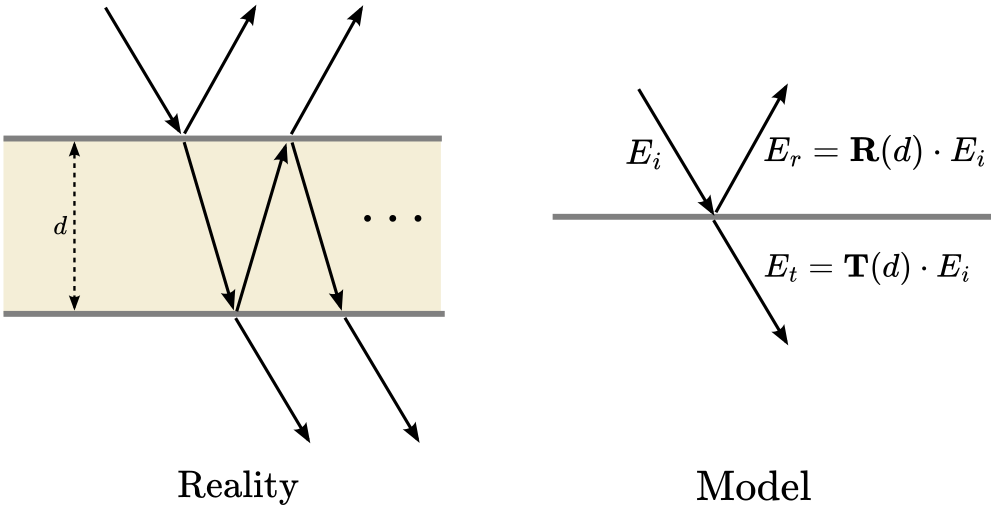
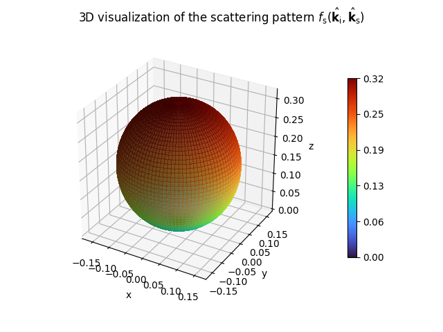
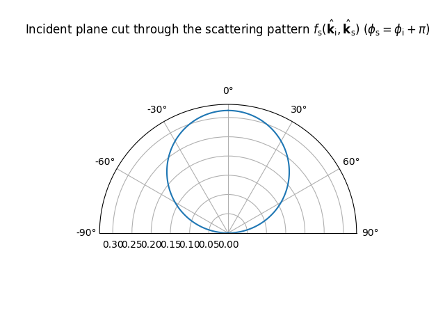
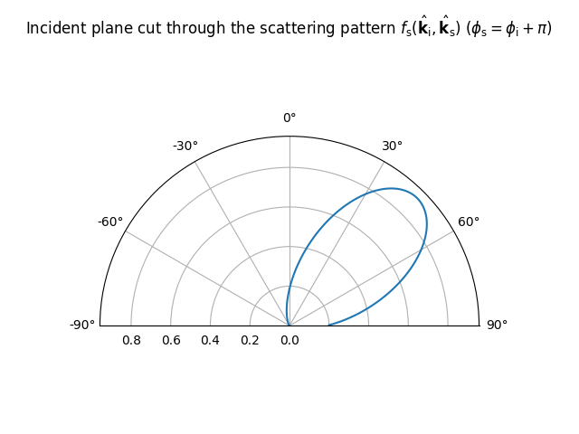
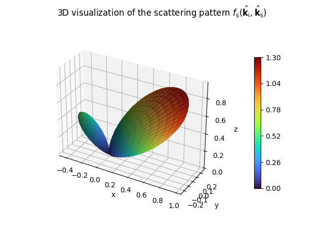

Radio Materials#
A radio material defines how an object scatters incident radio waves. It implements all necessary components to simulate the interaction between radio waves and objects composed of specific materials.
The base class RadioMaterialBase provides an interface
for implementing arbitrary radio materials and can be used to implement
custom materials, as detailed in the Developer Guide.
The RadioMaterial class implements the model described in the
Primer on Electromagnetics, and supports specular and diffuse
reflection as well as refraction. The details of this model are provided thereafter.
Similarly to scene objects (SceneObject), all radio
materials are uniquely identified by their name.
For example, specifying that a scene object named “wall” is made of the
material named “itu-brick” is done as follows:
obj = scene.get("wall") # obj is a SceneObject
obj.radio_material = "itu-brick" # "wall" is made of "itu-brick"
Radio materials provided with Sionna
The class RadioMaterial implements the model described in the
Primer on Electromagnetics. Following this model, a radio material consists of the
real-valued relative permittivity \(\varepsilon_r\), the conductivity \(\sigma\),
and the relative permeability \(\mu_r\).
For more details, see (7), mu, (8).
These quantities can possibly depend on the frequency of the incident radio
wave. Note that this model only allows non-magnetic materials with \(\mu_r=1\).
A radio material has also a thickness \(d\) associated with it which impacts the computation of the reflected and refracted fields (see (34)). For example, a wall is modeled in Sionna RT as a planar surface whose radio material describes the desired thickness.
Additionally, a RadioMaterial can have an effective roughness (ER)
associated with it, leading to diffuse reflections (see, e.g., [Degli-Esposti11]).
The ER model requires a scattering coefficient \(S\in[0,1]\) scattering_coefficient,
a cross-polarization discrimination coefficient \(K_x\) (42), as well as a scattering pattern
\(f_\text{s}(\hat{\mathbf{k}}_\text{i}, \hat{\mathbf{k}}_\text{s})\) (43)–(45), such as the
LambertianPattern or DirectivePattern. The meaning of
these parameters is explained in Diffuse Reflection.
Sionna provides the
ITU models of several materials whose properties
are automatically updated according to the configured frequency.
Through the ITURadioMaterial class, Sionna provides the models of all of the materials
defined in the ITU-R P.2040-4 recommendation [ITURP20404]. These models are based on curve fitting to
measurement results and assume non-ionized and non-magnetic materials
(\(\mu_r = 1\)).
Frequency dependence is modeled by
where \(f_{\text{GHz}}\) is the frequency in GHz, and the constants
\(a\), \(b\), \(c\), and \(d\) characterize the material.
The table below provides their values which are used in Sionna
(from [ITURP20404]).
Note that the relative permittivity \(\varepsilon_r\) and
conductivity \(\sigma\) of all materials are updated automatically when
the frequency is set through the scene’s property frequency.
Moreover, by default, the scattering coefficient, \(S\), of these materials is set to
0, leading to no diffuse reflection.
- class sionna.rt.RadioMaterialBase(props: mitsuba.Properties)[source]#
Base class to implement a radio material
This is an abstract class that cannot be instantiated, and serves as interface for defining radio materials.
A radio material defines how an object scatters incident radio waves.
- Parameters:
props (mitsuba.Properties) – Property container storing the parameters required to build the material
Methods
- eval(ctx: mitsuba.BSDFContext, si: mitsuba.SurfaceInteraction3f, wo: mitsuba.Vector3f, active: bool | drjit.cuda.ad.Bool = True) mitsuba.Spectrum[source]#
Evaluates the radio material
This function evaluates the Jones matrix of the radio material for the scattered direction
woand for the interaction type stored insi.dp_du.z.si.wiis the direction of propagation of the incident wave in the local framesi.sh_frameis the surface frame wheresh_frame.nis the normal to the intersected surface in the world coordinate systemsi.dn_dustores the edge vector in the local frame. This is only used for diffraction.si.dn_dvstores the normal to the n-face in the local frame. This is only used for diffraction.si.dp_dustores the distance from the diffraction point to the source, the distance from the diffraction point to the receiver, and the interaction type. The first two components are only used when diffraction is sampled.si.duv_dxandsi.duv_dystores the incident fieldsi.tstores the solid angle of the incident ray tube.
- Parameters:
ctx (mitsuba.BSDFContext) – A context data structure used to specify which interaction types are enabled
si (mitsuba.SurfaceInteraction3f) – Surface interaction data structure describing the underlying surface position
wo (mitsuba.Vector3f) – Direction of propagation of the scattered wave in the world frame
active (bool | drjit.cuda.ad.Bool) – Mask to specify active rays
- Returns:
Jones matrix as a \(4 \times 4\) real-valued matrix
- pdf(ctx: mitsuba.BSDFContext, si: mitsuba.SurfaceInteraction3f, wo: mitsuba.Vector3f, active: bool | drjit.cuda.ad.Bool = True) drjit.cuda.ad.Float[source]#
Evaluates the probability of the sampled interaction type and direction of scattered ray
This function evaluates the probability density of the radio material for the scattered direction
woand for the interaction type stored insi.dp_du.z.Note that the built-in
RadioMaterialreturns the event probability only and does not usewo.si.wiis the direction of propagation of the incident wave in the local framesi.sh_frameis the surface frame wheresh_frame.nis the normal to the intersected surface in the world coordinate systemsi.dn_dustores the edge vector in the local frame. This is only used for diffraction.si.dn_dvstores the normal to the n-face in the local frame. This is only used for diffraction.si.dp_dustores the distance from the diffraction point to the source, the distance from the diffraction point to the receiver, and the interaction type. The first two components are only used when diffraction is sampled.si.duv_dxandsi.duv_dystores the incident fieldsi.tstores the solid angle of the incident ray tube.
- Parameters:
ctx (mitsuba.BSDFContext) – A context data structure used to specify which interaction types are enabled
si (mitsuba.SurfaceInteraction3f) – Surface interaction data structure describing the underlying surface position
wo (mitsuba.Vector3f) – Direction of propagation of the scattered wave in the world frame
active (bool | drjit.cuda.ad.Bool) – Mask to specify active rays
- Returns:
Probability density value
- sample(ctx: mitsuba.BSDFContext, si: mitsuba.SurfaceInteraction3f, sample1: drjit.cuda.ad.Float, sample2: mitsuba.Point2f, active: bool | drjit.cuda.ad.Bool = True) Tuple[mitsuba.BSDFSample3f, mitsuba.Spectrum][source]#
Samples the radio material
This function samples an interaction type (e.g., specular reflection, diffuse reflection, refraction, or diffraction) and direction of propagation for the scattered ray, and returns the corresponding radio material sample and Jones matrix. The returned radio material sample stores the sampled type of interaction, sampled direction of propagation of the scattered ray, and the probability that the selected interaction was sampled.
The following assumptions are made on the inputs:
ctx.componentis a binary mask that specifies the types of interaction enabled. Booleans can be obtained from this mask as follows:
specular_reflection_enabled = (ctx.component & InteractionType.SPECULAR) > 0 diffuse_reflection_enabled = (ctx.component & InteractionType.DIFFUSE) > 0 refraction_enabled = (ctx.component & InteractionType.REFRACTION) > 0 diffraction_enabled = (ctx.component & InteractionType.DIFFRACTION) > 0
si.wiis the direction of propagation of the incident wave in the local framesi.sh_frameis the surface frame wheresh_frame.nis the normal to the intersected surface in the world coordinate systemsi.dn_dustores the edge vector in the local frame. This is only used for diffraction.si.dn_dvstores the normal to the n-face in the local frame. This is only used for diffraction.si.dp_dustores the distance from the diffraction point to the source, the distance from the diffraction point to the receiver, and the flags indicating the enabled interaction types. The first two components are only used when diffraction is sampled.si.duv_dxandsi.duv_dystores the incident fieldsi.tstores the solid angle of the incident ray tube.
Note that all quantities related to diffraction are integrated to the paths only if diffraction is sampled.
The outputs are set as follows:
bs.wois the direction of propagation of the sampled scattered ray in the world framebs.sampled_componentis the sampled interaction typebs.pdfis the probability of the sampled interaction typejones_matis the Jones matrix describing the transformation incurred to the incident wave in the implicit world frame
- Parameters:
ctx (mitsuba.BSDFContext) – A context data structure used to specify which interaction types are enabled
si (mitsuba.SurfaceInteraction3f) – Surface interaction data structure describing the underlying surface position
sample1 (drjit.cuda.ad.Float) – A uniformly distributed sample on \([0,1]\) used to sample the type of interaction
sample2 (mitsuba.Point2f) – A uniformly distributed sample on \([0,1]^2\) used to sample the direction of the reflected wave in the case of diffuse reflection, or the direction of the diffracted ray on the Keller cone
active (bool | drjit.cuda.ad.Bool) – Mask to specify active rays
- Returns:
Radio material sample and Jones matrix as a \(4 \times 4\) real-valued matrix
- traverse(callback: mitsuba.TraversalCallback)[source]#
Traverse the attributes and objects of this instance
Implementing this function is required for Mitsuba to traverse a scene graph, including materials, and determine the differentiable parameters.
- Parameters:
callback (mitsuba.TraversalCallback) – Object used to traverse the scene graph
Attributes
- property color#
Get/set the RGB (red, green, blue) color for the radio material as displayed in the previewer and renderer. Each RGB component must have a value within the range \(\in [0,1]\).
- Type:
Tuple[float, float, float]
- class sionna.rt.RadioMaterial(name: str | None = None, thickness: float | drjit.cuda.ad.Float | None = 0.1, relative_permittivity: float | drjit.cuda.ad.Float = 1.0, conductivity: float | drjit.cuda.ad.Float = 0.0, scattering_coefficient: float | drjit.cuda.ad.Float = 0.0, xpd_coefficient: float | drjit.cuda.ad.Float = 0.0, scattering_pattern: str = 'lambertian', frequency_update_callback: Callable[[drjit.cuda.ad.Float], Tuple[drjit.cuda.ad.Float, drjit.cuda.ad.Float]] | None = None, color: Tuple[float, float, float] | None = None, props: mitsuba.Properties | None = None, **kwargs)[source]#
Class implementing the radio material model described in the Primer on Electromagnetics
This class implements
RadioMaterialBase.A radio material is defined by its relative permittivity \(\varepsilon_r\) and conductivity \(\sigma\) (see (8)), its thickness \(d\) (see (35)), as well as optional parameters related to diffuse reflection (see `Scattering`_), such as the scattering coefficient \(S\), cross-polarization discrimination coefficient \(K_x\), and scattering pattern \(f_\text{s}(\hat{\mathbf{k}}_\text{i}, \hat{\mathbf{k}}_\text{s})\).
We assume non-ionized and non-magnetic materials, and therefore the permeability \(\mu\) of the material is assumed to be equal to the permeability of vacuum i.e., \(\mu_r=1.0\).
Reflection and refraction coefficients are computed assuming that the intersected surface models a slab with the specified
thickness(see (34)). The computed coefficients therefore account for the multiple internal reflections inside the slab, meaning that this class should be used when objects like walls are modeled as single flat surfaces. The figure below illustrates this model, where \(E_i\) is the incident electric field, \(E_r\) is the reflected field and \(E_t\) is the transmitted field. The Jones matrices, \(\mathbf{R}(d)\) and \(\mathbf{T}(d)\), represent the effects of reflection and transmission, respectively, and depend on the slab thickness, \(d\).
For frequency-dependent materials, it is possible to specify a callback function
frequency_update_callbackthat computes the material properties \((\varepsilon_r, \sigma)\) from the frequency. If a callback function is specified, the material properties cannot be set and the values specified at instantiation are ignored.In addition to the following inputs, additional keyword arguments can be provided that will be passed to the scattering pattern as keyword arguments.
- Parameters:
name (str | None) – Unique name of the material. Required if
propsis not provided. Ignored ifpropsis provided.thickness (float | drjit.cuda.ad.Float | None) – Thickness of the material [m]. If
None, the default material thickness is used. Ignored ifpropsis provided.relative_permittivity (float | drjit.cuda.ad.Float) – Relative permittivity of the material. Must be larger or equal to 1. Ignored if
frequency_update_callbackorpropsis provided.conductivity (float | drjit.cuda.ad.Float) – Conductivity of the material [S/m]. Must be non-negative. Ignored if
frequency_update_callbackorpropsis provided.scattering_coefficient (float | drjit.cuda.ad.Float) – Scattering coefficient \(S\in[0,1]\) as defined in
scattering_coefficient. Ignored ifpropsis provided.xpd_coefficient (float | drjit.cuda.ad.Float) – Cross-polarization discrimination coefficient \(K_x\in[0,1]\) as defined in (42). Only relevant if
scattering_coefficientis not equal to zero. Ignored ifpropsis provided.scattering_pattern (str) – Name of a registered scattering pattern for diffuse reflections (“lambertian” | “backscattering” | “directive”). Only relevant if
scattering_coefficientis not equal to zero. Defaults to"lambertian". Ignored ifpropsis provided.frequency_update_callback (Callable[[drjit.cuda.ad.Float], Tuple[drjit.cuda.ad.Float, drjit.cuda.ad.Float]] | None) – Callable used to update the material parameters when the frequency is set. This callable must take as input the frequency [Hz] and must return the material properties as a tuple:
(relative_permittivity, conductivity). If set toNone, then material properties are constant and equal to the value set at instantiation or using the corresponding setters.color (Tuple[float, float, float] | None) – RGB (red, green, blue) color for the radio material as displayed in the previewer and renderer. Each RGB component must have a value within the range \([0,1]\). If set to
None, then a random color is used.props (mitsuba.Properties | None) – Mitsuba container storing the material properties, and used when loading a scene to initialize the radio material.
Keyword Arguments#
**kwargs:AnyDepending on the chosen scattering antenna pattern, other keyword arguments must be provided. See the Developer Guide for more details.
- property frequency_update_callback#
Get/set the frequency update callback
- property scattering_coefficient#
Get/set the scattering coefficient \(S\in[0,1]\)
scattering_coefficient- Type:
- property scattering_pattern#
Get/set the scattering pattern
- Type:
{kind=link}
- class sionna.rt.ITURadioMaterial(name: str | None = None, itu_type: str | None = None, thickness: float | drjit.cuda.ad.Float | None = None, scattering_coefficient: float | drjit.cuda.ad.Float = 0.0, xpd_coefficient: float | drjit.cuda.ad.Float = 0.0, scattering_pattern: str = 'lambertian', color: Tuple[float, float, float] | None = None, props: mitsuba.Properties | None = None, **kwargs)[source]#
Class implementing the materials defined in the ITU-R P.2040-4 recommendation [ITURP20404]
This class inherits from
RadioMaterial.The models from the ITU-R P.2040-4 recommendation are based on curve fitting to measurement results and assume non-ionized and non-magnetic materials (\(\mu_r = 1\)). Frequency dependence is modeled by
\[\begin{split}\begin{aligned} \varepsilon_r &= a f_{\text{GHz}}^b\\ \sigma &= c f_{\text{GHz}}^d \end{aligned}\end{split}\]where \(f_{\text{GHz}}\) is the frequency in GHz, and the constants \(a\), \(b\), \(c\), and \(d\) characterize the material.
Note that the relative permittivity \(\varepsilon_r\) and conductivity \(\sigma\) of all materials are updated automatically when the frequency is set through the scene’s property
frequency.In addition to the following inputs, additional keyword arguments can be provided that will be passed to the scattering pattern as keyword arguments.
- Parameters:
name (str | None) – Unique name of the material. Required if
propsis not provided. Ignored ifpropsis provided.itu_type (str | None) – Type of the ITU material. Required if
propsis not provided. The available materials are listed in the corresponding table. Ignored ifpropsis provided.thickness (float | drjit.cuda.ad.Float | None) – Thickness of the material [m]. If
None, the default material thickness is used. Ignored ifpropsis provided.scattering_coefficient (float | drjit.cuda.ad.Float) – Scattering coefficient \(S\in[0,1]\) as defined in
scattering_coefficient. Ignored ifpropsis provided.xpd_coefficient (float | drjit.cuda.ad.Float) – Cross-polarization discrimination coefficient \(K_x\in[0,1]\) as defined in (42). Only relevant if
scattering_coefficientis not equal to zero. Ignored ifpropsis provided.scattering_pattern (str) – Name of a registered scattering pattern for diffuse reflections (“lambertian” | “backscattering” | “directive”). Only relevant if
scattering_coefficientis not equal to zero. Defaults to"lambertian". Ignored ifpropsis provided.color (Tuple[float, float, float] | None) – RGB (red, green, blue) color for the radio material as displayed in the previewer and renderer. Each RGB component must have a value within the range \([0,1]\). If set to
None, then a random color is used.props (mitsuba.Properties | None) – Mitsuba container storing the material properties, and used when loading a scene to initialize the radio material.
Methods
Attributes
Scattering Patterns#
- class sionna.rt.ScatteringPattern[source]#
Abstract class implementing a scattering pattern
Methods
- abstractmethod __call__(ki_local: mitsuba.Vector3f, ko_local: mitsuba.Vector3f) drjit.cuda.ad.Float[source]#
- Parameters:
ki_local (mitsuba.Vector3f) – Direction of propagation of the incident wave in local frame
ko_local (mitsuba.Vector3f) – Direction of propagation of the scattered wave in local frame
- Returns:
Scattering pattern value
- show(k_i_local: mitsuba.Vector3f = (0.7071, 0.0, -0.7071), show_directions: bool = False) tuple[matplotlib.figure.Figure, matplotlib.figure.Figure][source]#
Visualizes the scattering pattern
It is assumed that the surface normal points toward the positive z-axis.
- Parameters:
k_i_local (mitsuba.Vector3f) – Incoming direction
show_directions (bool) – Show incoming and specular reflection directions
- Returns:
3D visualization of the scattering pattern
- Returns:
Visualization of the incident plane cut through the scattering pattern
- class sionna.rt.LambertianPattern[source]#
Lambertian scattering model from [Degli-Esposti07] as given in (43)
Example#
>>> LambertianPattern().show()


- __call__(ki_local: mitsuba.Vector3f, ko_local: mitsuba.Vector3f) drjit.cuda.ad.Float[source]#
- Parameters:
ki_local (mitsuba.Vector3f) – Direction of propagation of the incident wave in local frame
ko_local (mitsuba.Vector3f) – Direction of propagation of the scattered wave in local frame
- Returns:
Scattering pattern value
- show(k_i_local: mitsuba.Vector3f = (0.7071, 0.0, -0.7071), show_directions: bool = False) tuple[matplotlib.figure.Figure, matplotlib.figure.Figure]#
Visualizes the scattering pattern
It is assumed that the surface normal points toward the positive z-axis.
- Parameters:
k_i_local (mitsuba.Vector3f) – Incoming direction
show_directions (bool) – Show incoming and specular reflection directions
- Returns:
3D visualization of the scattering pattern
- Returns:
Visualization of the incident plane cut through the scattering pattern
- class sionna.rt.DirectivePattern(alpha_r: int = 1)[source]#
Directive scattering model from [Degli-Esposti07] as given in (44)
- Parameters:
alpha_r (int) – Positive integer parameter related to the width of the scattering lobe in the direction of the specular reflection
Example#
>>> from sionna.rt import DirectivePattern >>> DirectivePattern(alpha_r=10).show()


- __call__(ki_local: mitsuba.Vector3f, ko_local: mitsuba.Vector3f) drjit.cuda.ad.Float#
- Parameters:
ki_local (mitsuba.Vector3f) – Direction of propagation of the incident wave in local frame
ko_local (mitsuba.Vector3f) – Direction of propagation of the scattered wave in local frame
- Returns:
Scattering pattern value
- show(k_i_local: mitsuba.Vector3f = (0.7071, 0.0, -0.7071), show_directions: bool = False) tuple[matplotlib.figure.Figure, matplotlib.figure.Figure]#
Visualizes the scattering pattern
It is assumed that the surface normal points toward the positive z-axis.
- Parameters:
k_i_local (mitsuba.Vector3f) – Incoming direction
show_directions (bool) – Show incoming and specular reflection directions
- Returns:
3D visualization of the scattering pattern
- Returns:
Visualization of the incident plane cut through the scattering pattern
- class sionna.rt.BackscatteringPattern(alpha_r: int = 1, alpha_i: int = 1, lambda_: drjit.cuda.ad.Float = 1.0)[source]#
Backscattering model from [Degli-Esposti07] as given in (45)
- Parameters:
alpha_r (int) – Positive integer parameter related to the width of the scattering lobe in the direction of the specular reflection
alpha_i (int) – Positive integer parameter related to the width of the scattering lobe in the incoming direction
lambda – Parameter determining the percentage of the diffusely reflected energy in the lobe around the specular reflection. Must be in the range \([0,1]\)
lambda_ (drjit.cuda.ad.Float)
Example#
>>> from sionna.rt import BackscatteringPattern >>> BackscatteringPattern(alpha_r=20, alpha_i=30, lambda_=0.7).show()


- __call__(ki_local: mitsuba.Vector3f, ko_local: mitsuba.Vector3f) drjit.cuda.ad.Float[source]#
- Parameters:
ki_local (mitsuba.Vector3f) – Direction of propagation of the incident wave in local frame
ko_local (mitsuba.Vector3f) – Direction of propagation of the scattered wave in local frame
- Returns:
Scattering pattern value
- show(k_i_local: mitsuba.Vector3f = (0.7071, 0.0, -0.7071), show_directions: bool = False) tuple[matplotlib.figure.Figure, matplotlib.figure.Figure]#
Visualizes the scattering pattern
It is assumed that the surface normal points toward the positive z-axis.
- Parameters:
k_i_local (mitsuba.Vector3f) – Incoming direction
show_directions (bool) – Show incoming and specular reflection directions
- Returns:
3D visualization of the scattering pattern
- Returns:
Visualization of the incident plane cut through the scattering pattern
- sionna.rt.register_scattering_pattern(name: str, scattering_pattern_factory: Callable[[...], sionna.rt.radio_materials.scattering_pattern.ScatteringPattern])[source]#
Registers a new factory method for a scattering pattern
- Parameters:
name (str) – Name of the factory method
scattering_pattern_factory (Callable[[...], sionna.rt.radio_materials.scattering_pattern.ScatteringPattern]) – A factory method returning an instance of
ScatteringPattern